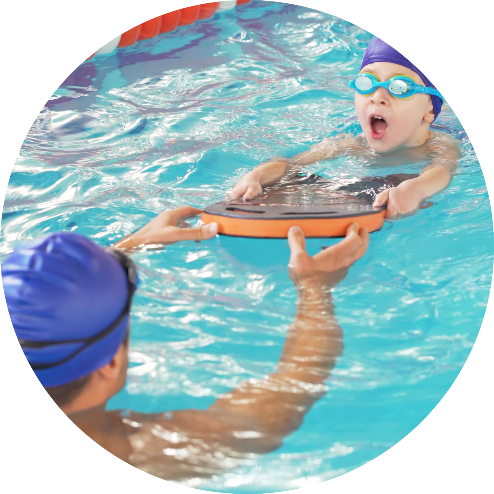

A natação é um esporte aquático praticado em piscinas, rios, lagos, oceanos e outras massas de água.
Além de ser uma atividade esportiva, a natação é uma habilidade essencial que desempenha um papel
significativo na segurança e na promoção da saúde.
NO ESPORTE

No contexto esportivo, a natação envolve nadadores percorrendo distâncias variadas na água, utilizando
uma variedade de estilos de nado, como crawl, costas, peito e borboleta. Cada estilo tem suas próprias
técnicas e desafios específicos, que exigem coordenação, força, resistência e habilidades aprimoradas.
A natação é uma modalidade muito popular em competições olímpicas e em eventos esportivos em todo o mundo.
COMO ATIVIDADE FÍSICA
Além disso, a natação é uma atividade física que beneficia a saúde geral das pessoas.
Ela é frequentemente recomendada como uma forma eficaz de exercício cardiovascular, pois melhora a
capacidade pulmonar, fortalece os músculos, ajuda a controlar o peso e reduz o estresse.
A natação também é conhecida por ser uma atividade de baixo impacto nas articulações, o que a torna
acessível a pessoas de todas as idades e níveis de condicionamento físico.
COMO LAZER

Além dos benefícios físicos, a natação oferece momentos de lazer, relaxamento e recreação.
Muitas pessoas aproveitam as piscinas e praias para se refrescar e desfrutar da água.
Além disso, a natação é uma habilidade importante em situações de segurança, como o salvamento aquático,
pois permite que indivíduos resgatem outras pessoas em perigo na água.
A NATAÇÃO...
é uma atividade multifacetada que combina esporte, saúde, lazer e segurança.
Ela desempenha um papel fundamental na sociedade, proporcionando oportunidades de competição,
condicionamento físico e diversão, ao mesmo tempo em que promove a segurança na água e a qualidade de vida.